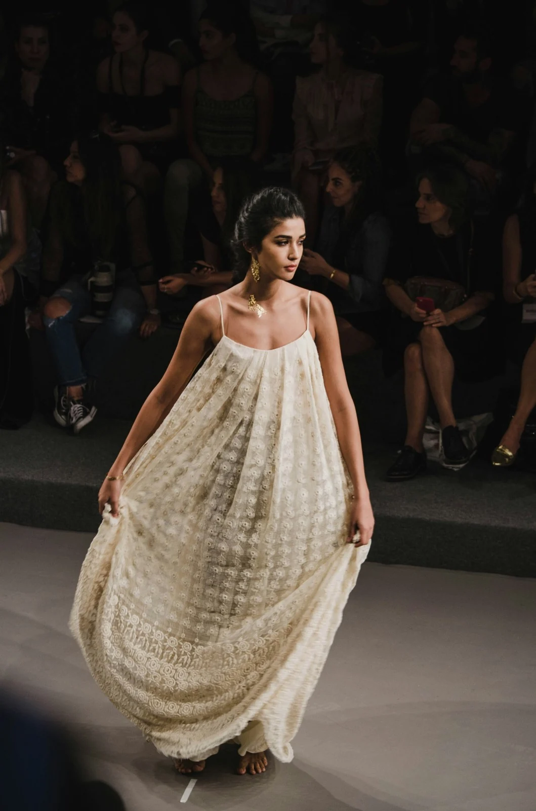
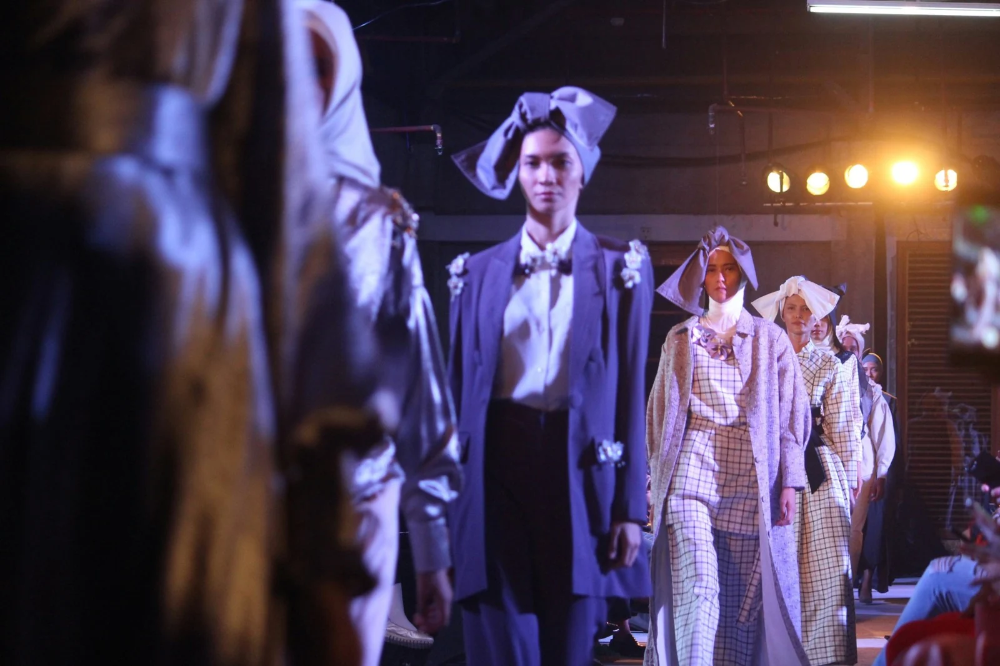
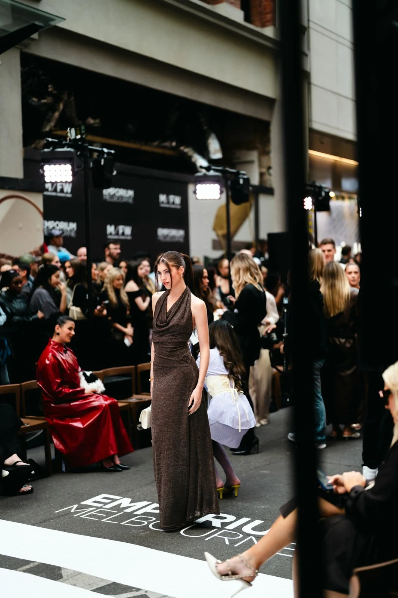
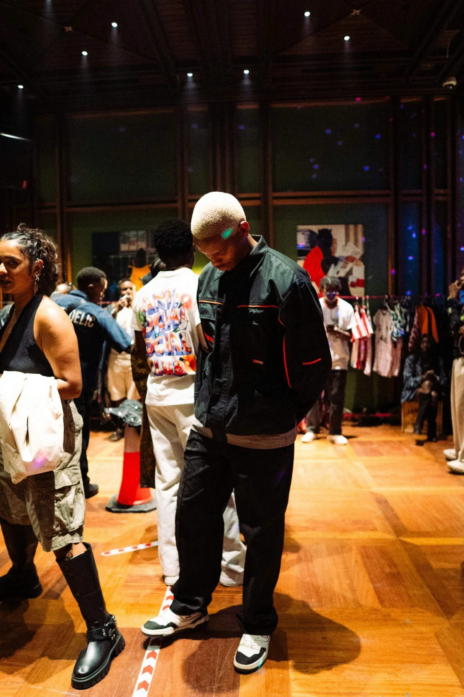

18 SEP
2027
Saturday · Doors open at 17:30 (CEST).
04 / PLAN YOUR VISIT
Everything you need for a smooth, stress-free visit.

Saturday · Doors open at 17:30 (CEST).
Exact venue and address are not yet set. Do not travel based on this concept page.
Designed for international visitors. No German needed.
GETTING HERE
Berlin is the planned city for this fictional fashion show.
For the concept, plan to arrive via Berlin Hauptbahnhof and continue by public transport. The final venue and entrance are not confirmed; no real journey or booking should be made for this school project.
Check the schedule →ACCESSIBILITY
We aim for clear navigation, readable contrast and keyboard-friendly interactions on this website. Physical venue accessibility (step-free access, seating and facilities) cannot be confirmed until a real location is selected.
This fictional event has no active organiser email or ticket office. For visitor information, consult the programme and frequently asked questions on this website.
This is a fictional school-project event, so there is no active organiser email or ticket office. For a real launch, add verified contact details here.
No contact form is provided because there is no live service to receive messages.
RUNWAY COLLECTIVE is a fictional student design project at Kunstschule Wandsbek, Hamburg. It is not an official school website or a commercial event organiser.
Publisher / responsible person: Lilly Westbrook
Privacy: This static demo does not use analytics, tracking cookies or collect form data. It loads no external fonts or third-party scripts.
Studienprojekt der Kunstschule Wandsbek, keine echte Veranstaltung. School project at Kunstschule Wandsbek, Hamburg; this is not a real event.



EXPLORE MORE / TAP TO OPEN
Tap a question to discover more.
Fashion photographs supplied by the project author from Unsplash. Unsplash licence. The original source filenames are listed below.
Logo, favicon, calendar, location, language and ticket icons, transparent runway mark and camera GIF: project graphics created with ChatGPT and programmatic drawing tools. The static camera PNG is a frame of the project GIF. The Apple touch icon is a project graphic.